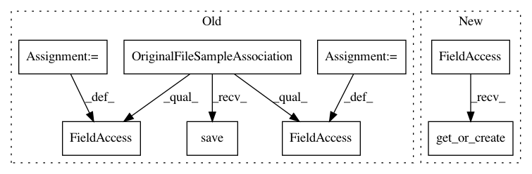

7636a32728d1d6205d4f6ceeea8e6f2d6967b81f,foreman/data_refinery_foreman/surveyor/geo.py,GeoSurveyor,create_experiment_and_samples_from_api,#GeoSurveyor#Any#,59
Before Change
logger.info("Created OriginalFile: " + str(original_file))
for sample_object in all_samples:
original_file_sample_association = OriginalFileSampleAssociation()
original_file_sample_association.sample = sample_object
original_file_sample_association.original_file = original_file
original_file_sample_association.save()
return experiment_object, all_samples
def discover_experiment_and_samples(self) -> (Experiment, List[Sample]):
After Change
original_file_sample_association.original_file = original_file
original_file_sample_association.save()
ExperimentSampleAssociation.objects.get_or_create(
experiment=experiment_object, sample=sample_object)
// These supplementary files _may-or-may-not_ contain the type of raw data we can process.
for experiment_supplement_url in gse.metadata.get("supplementary_file", []):
In pattern: SUPERPATTERN
Frequency: 3
Non-data size: 8
Instances
Project Name: AlexsLemonade/refinebio
Commit Name: 7636a32728d1d6205d4f6ceeea8e6f2d6967b81f
Time: 2018-06-06
Author: kurt.wheeler91@gmail.com
File Name: foreman/data_refinery_foreman/surveyor/geo.py
Class Name: GeoSurveyor
Method Name: create_experiment_and_samples_from_api
Project Name: AlexsLemonade/refinebio
Commit Name: 0455c9327b9fab14c768a100459727050e81527e
Time: 2018-07-24
Author: miserlou@gmail.com
File Name: foreman/data_refinery_foreman/surveyor/geo.py
Class Name: GeoSurveyor
Method Name: create_experiment_and_samples_from_api
Project Name: AlexsLemonade/refinebio
Commit Name: 5058dca810c613ba27217ed39b3528e100e20ea6
Time: 2018-07-24
Author: miserlou@gmail.com
File Name: foreman/data_refinery_foreman/surveyor/sra.py
Class Name: SraSurveyor
Method Name: _generate_experiment_and_samples